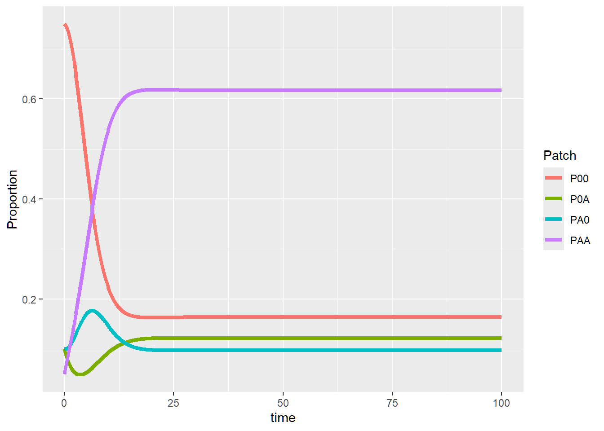
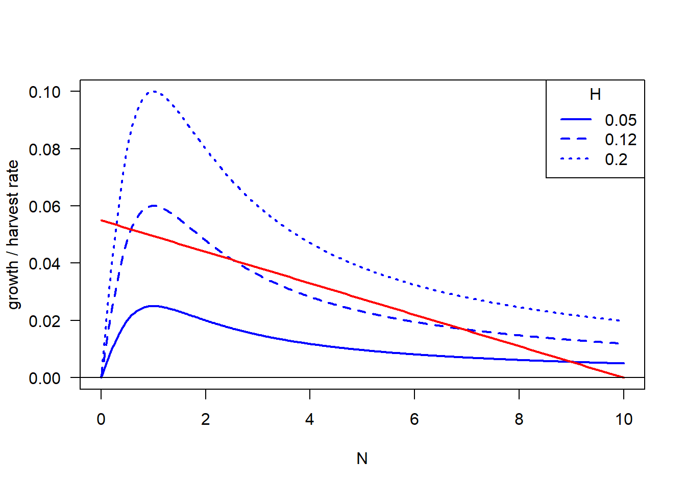
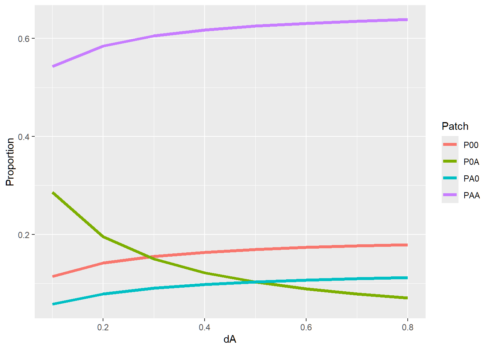

Week 6 - Harvesting and bifurcation
In this lab section, we’re going to analyze the budworm population dynamic model from Ludwig et al., 1978.
Part 1 - Stability of the budworm model
In part 1 we’re going to visualize the stability of the budworm model, by plotting the differential equation. We will plot the the differential equation with different initial, which we will see that the number and stability of equilibrium changes when parameter changes.
\[ \dfrac{dN}{dt} = rN(1 - \dfrac{N}{K}) - \dfrac{HN^2}{A^2 + N^2} \]
#### Plotting the functional form for different parameters
#### Parameter setting
r <- 0.055; K <- 10; H <- 0.1; A <- 1
#### Visualize the whole dN/dt with different H
N.vec <- seq(from = 0, to = 10, length = 500)
H.breaks <- c(0.05, 0.12, 0.20)
dat <- outer(X = N.vec, Y = H.breaks,
function(N, H){r * N * (1 - N / K) - (H * N^2 / (A^2 + N^2))})
matplot(x = N.vec, y = dat, type = "l",
xlab = "N", ylab = "dN/dt", col = "blue", lwd = 2, las = 1)
abline(h = 0)
legend("bottomleft", legend = H.breaks, title = "H", col = "blue", lty=1:3, lwd = 2)
Second, we’re going to plot \(harvest\) rate against \(N\) with separate components of \(dN/Ndt\), which the blue line is \[ \dfrac{HN}{A^2 + N^2} \] with different \(H\), the red line is, \[ r(1 - \dfrac{N}{K}) \] and the points that blue line and red line crosses are the equilibrium points.
#### Visualize separate components of dN/Ndt with different H
N.vec <- seq(from = 0, to = 10, length = 500)
H.breaks <- c(0.05, 0.12, 0.20)
dat.growth <- outer(X = N.vec, Y = H.breaks,
function(N, H){H * N / (A^2 + N^2)}) # Note notation change
matplot(x = N.vec, y = dat.growth, type = "l", ylim = c(0, 0.10), las = 1,
xlab = "N", ylab = "growth / harvest rate", col = "blue", lwd = 2)
curve(r * (1 - x/K), add = T, col = "red", lwd = 2) # Just curve since its the same line, and note variable notation change
abline(h = 0)
legend("topright", legend = H.breaks, title = "H", col = "blue", lty=1:3, lwd = 2)
Part 2 - Use rootSolve function gradient and uniroot.all, to solve stability of budworm model
#### Stability of the budworm model, as a function of its parameters
#### Using "rootSolve" function "gradient" and "uniroot.all"
#### Works best for simple models and those with known solutions
########################################################################################################################
library(rootSolve)
#### Parameter setting
r <- 0.055; K <- 10; H <- 0.1; A <- 1
#### Spruce budworm model for rootSolve
Budworm <- function(N, H = 0.1){
r * N * (1 - N / K) - (H * N^2 / (A^2 + N^2))
}
#### Function of root stability
Stability <- function(H.value = 0.1){
equilibrium <- uniroot.all(f = Budworm, interval = c(0, K), H = H.value) # finds all roots
lambda <- vector(mode = "numeric", length = length(equilibrium))
for(i in 1:length(equilibrium)){
lambda[i] <- sign(gradient(f = Budworm, x = equilibrium[i], H = H.value))
}
return(list(Equilibrium = equilibrium,
Lambda = lambda))
}
#### Bifurcation diagram for H
H.vec <- seq(0.001, 0.3, by = 0.0001)
## Create plotting frame
plot(0, xlim = range(H.vec), ylim = c(0, 10), type = "n", las = 1,
xlab = "H", ylab = "Equilibrium density, N*", main = "Budworm model bifurcation along H")
legend("topright", pch = 15, pt.cex = 2, c("stable", "unstable"),
col = c("darkblue", "lightblue"))
## Calculate number of roots and stability across range of H
for(H in H.vec){
temp <- Stability(H.value = H)
points(x = rep(H, length(temp$Equilibrium)),
y = temp$Equilibrium,
pch = 15, col = ifelse(temp$Lambda == -1, "darkblue", "lightblue"))
}
Take a look a this
website if you’re interested in more details of bifurcation.
Extra materials
Using deSolve function ode to brute-force stable solution
Here we’re going to use deSolve to solve the budworm model,
#### Budworm model for deSolve
library(deSolve)
BudwormODE <- function(times, state, parms) {
with(as.list(c(state, parms)), {
dN_dt = r * N * (1 - N / K) - (H * N^2 / (A^2 + N^2))
return(list(c(dN_dt)))
})
}
### Parameters setting
times <- seq(0, 5000, by = 100)
state <- c(N = 10)
#### Bifurcation diagram for H -- the forward branch
## Set first forward simulation and saving space
H.vec.forward <- seq(0.001, 0.25, by = 0.001)
parms <- c(r = 0.055, K = 10, H = H.vec.forward[1], A = 1)
temp <- ode(func = BudwormODE, times = times, y = state, parms = parms)
forward <- data.frame(H = H.vec.forward,
N = rep(temp[length(times), 2], length(H.vec.forward)))
## Run across forward vector, using previous step equilibrium as new initial state
for(i in 2:length(H.vec.forward)){
state <- c(N = forward[i-1, 2] + 0.001) ## Remember to add small perturbation
parms <- c(r = 0.055, K = 10, H = forward[i, 1], A = 1)
temp <- ode(func = BudwormODE, times = times, y = state, parms = parms)
forward[i, 2] = temp[length(times), 2]
}
#### Bifurcation diagram for H -- the backward branch
## Set first backward simulation and saving space
H.vec.backward <- rev(H.vec.forward)
parms <- c(r = 0.055, K = 10, H = H.vec.backward[1], A = 1)
temp <- ode(func = BudwormODE, times = times, y = state, parms = parms)
backward <- data.frame(H = H.vec.backward,
N = rep(temp[length(times), 2], length(H.vec.backward)))
## Run across backward vector, using previous step equilibrium as new initial state
for(i in 2:length(H.vec.backward)){
state <- c(N = backward[i-1, 2] + 0.001) ## Remember to add small perturbation
parms <- c(r = 0.055, K = 10, H = backward[i, 1], A = 1)
temp <- ode(func = BudwormODE, times = times, y = state, parms = parms)
backward[i, 2] = temp[length(times), 2]
}
#### Plot both forward and backward branch
plot(forward[, 1], forward[, 2],
xlim = range(H.vec.forward), ylim = c(0, 10), las = 1, pch = 1, col = "darkblue", cex = 1.6,
xlab = "H", ylab = "Equilibrium density, N*", main = "Budworm model bifurcation along H")
points(backward[, 1], backward[, 2], pch = 16, col = "lightblue")
legend("topright", pch = c(1, 16), pt.cex = 1.5, c("forward", "backward"),
col = c("darkblue", "lightblue"))